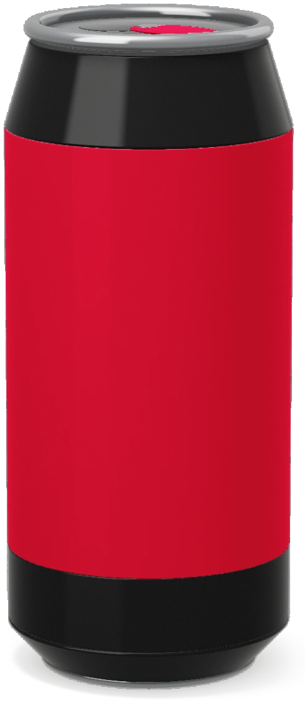
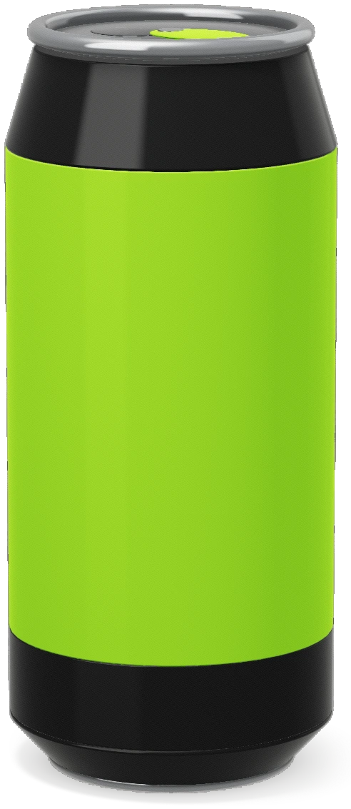
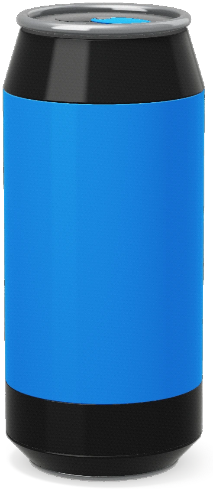
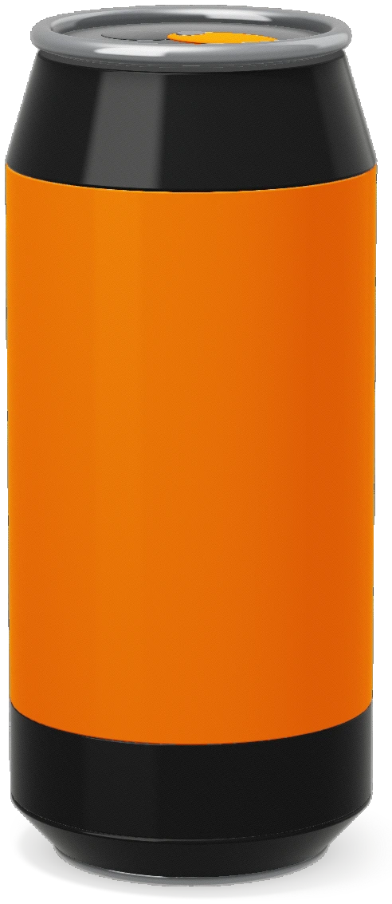

Energy drink for college and the gym
16 oz cans in four flavors, sold by the 12-pack. One for the 8 a.m. lecture, one before leg day, ten for the fridge.
The four flavors
-
Black cherry
Dark cherry with a sour edge at the end. The red can.

-
Lime
Sharp lime, more sour than sweet. The green can.

-
Blue raspberry
The candy-store flavor, sweet first and tart after. The blue can.

-
Mango
Ripe mango, the sweetest of the four. The orange can.

For the library and the weight room
A can beside the textbooks at 11 p.m., or on the gym floor between sets.
The can
A third more than a 12 oz soda can, and the pull tab takes the color of the flavor.
- Volume16 oz (473 ml)
- In a 12-pack192 oz (5.7 liters)
- Not recommended for
Children, people who are pregnant or nursing, and anyone sensitive to caffeine.
The 12-pack
Twelve cans of one flavor. Pick the flavor and how many packs.